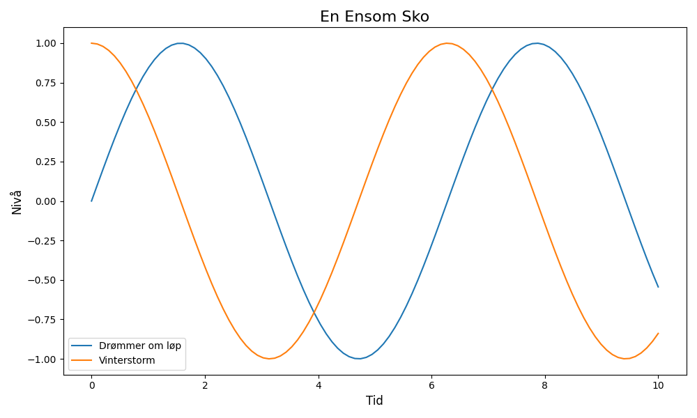

En ensom sko på en våt asfaltvei, drømmer om løp og en vei som er lei. Vinden blåser, regnet faller lett, mens skoen venter, tålmodig og mett.

import matplotlib.pyplot as plt
import numpy as np
# Dikt
dikt = """
En ensom sko på en våt asfaltvei,
drømmer om løp og en vei som er lei.
Vinden blåser, regnet faller lett,
mens skoen venter, tålmodig og mett.
"""
# Generer data for en enkel graf
x = np.linspace(0, 10, 100)
y1 = np.sin(x)
y2 = np.cos(x)
# Lag figur og akser
fig, ax = plt.subplots(figsize=(10, 6))
# Plott data
ax.plot(x, y1, label='Drømmer om løp')
ax.plot(x, y2, label='Vinterstorm')
# Legg til tittel og akseetiketter
ax.set_title('En Ensom Sko', fontsize=16)
ax.set_xlabel('Tid', fontsize=12)
ax.set_ylabel('Nivå', fontsize=12)
ax.legend()
# Juster layout
plt.tight_layout()
# Lagre figuren
plt.savefig(output_path)execution_ok=True fallback_used=False image_ok=True